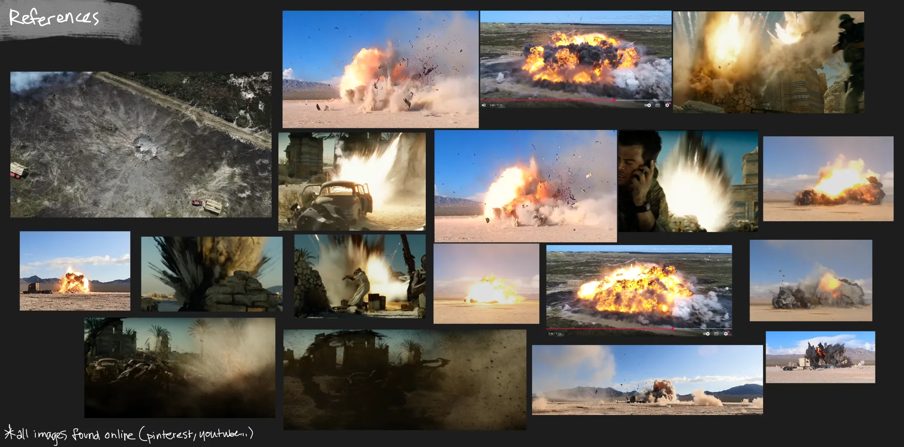

2025/9
Unreal Engine, Houdini, Embergen, Substance Designer
◆ I did not use generative AI.
What I did I did the explosion vfx.
Assets used I placed my vfx on another artist's environment:

I made this real-time explosion VFX using Substance Designer, Embergen, and Houdini, and put it together in Unreal Engine. It is composed of a destruction decal, shockwave dust, initial lights and flares, explosion flipbooks, sparks, kicked-up dust and debris, and leftover smoke.
Timing is very important, and the first frames are crucial for conveying a realistic explosive motion. That's why I added extra flares and lights, and made sure the initial shapes help deliver that punch.
I rendered the fluid simulations using the 6-way lighting method, so that the VFX can be placed anywhere in the scene and under any lighting scenario. The fluid is lit from 6 different points (top, left, right, bottom, back, front) and packed into two different textures. Then, inside the engine, I interpolate between the different channels according to the direction of the light and position of the explosion.
Portfolio